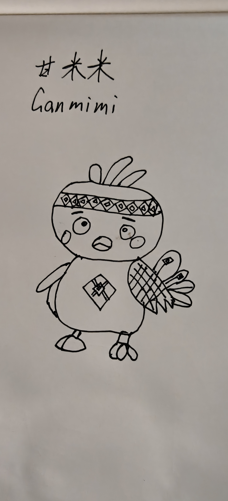
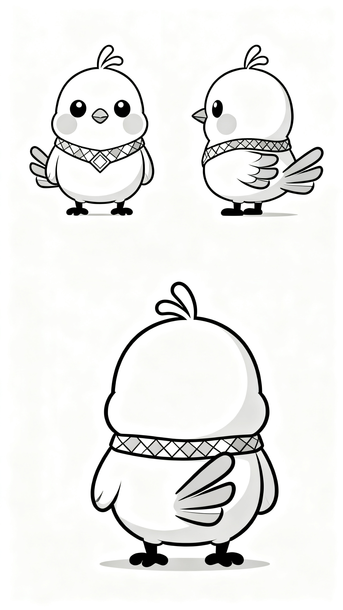
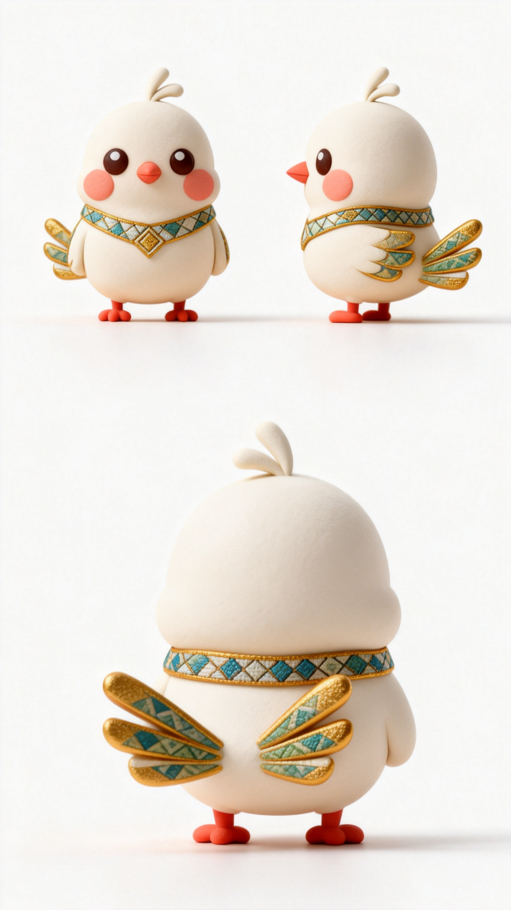
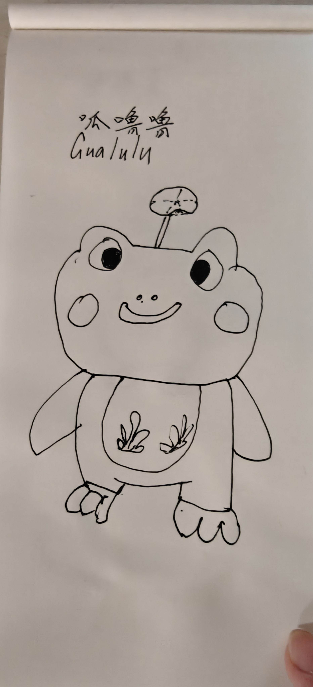
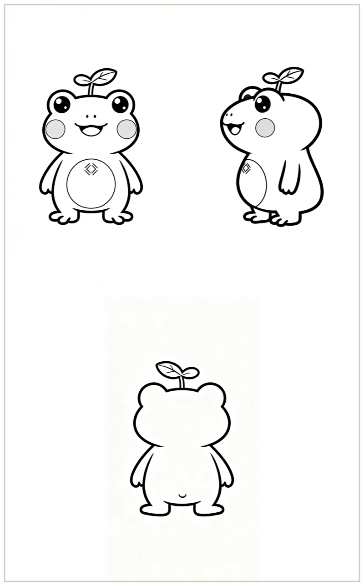
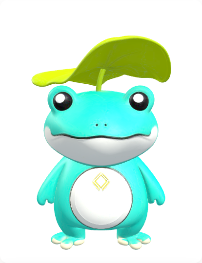

手绘草图 → AI 全流程创作Hand-drawn sketches → full AI pipeline
创作说明About This Work
从纸笔手绘到 AI 定稿：双 IP 形象、26 格图文漫剧（三个故事）、AI 视频、AI 音乐与双语配音，全部由 AI 原生创作完成，过程可溯源。From pen-and-paper sketches to AI final art: the duo IP, a 26-panel comic (three stories), AI video, AI music and bilingual voiceover — all AI-native and traceable.
工具链：即梦 / Midjourney（形象与漫画）· 即梦 Seedance 2.0（视频）· Suno（音乐）· 微软神经网络音色（字幕与配音）· 代码（网页与互动）。
Pipeline: Jimeng / Midjourney · Jimeng Seedance 2.0 (video) · Suno (music) · Microsoft neural TTS (captions & voice) · code (web & interactives).
赛事：东方初芯 AI 原生内容创作大赛 · 主题04 中华文化全球传播Dongfang Chuxin AI-native Creation Contest · Theme 04: Chinese Culture, Global Communication
创作声明：本作品 IP「甘米米 × 呱噜噜」由参赛者「啊阿狸不会拉杆」原创，版权归其所有；用于宣传个人原创 IP，如需使用请注明来源。IP "Ganmimi × Gualulu" is the original creation of contestant "A-Ali-Bu-Hui-La-Gan" (all rights reserved); for IP promotion — please credit the source.
双 IP 创作管线The Duo IP Pipeline
每一个形象都经过「手绘 → AI 草稿 → AI 定稿 → 3D 建模」四步打磨，过程完整可溯源。Each character goes through four stages — hand-drawn sketch → AI draft → AI final art → 3D model — fully traceable.







